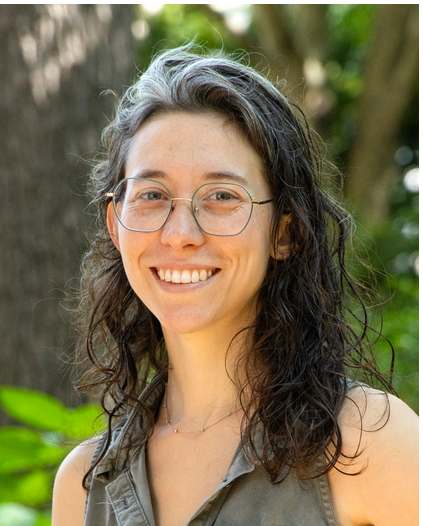

Counting Methods from the Perspective of Integer Partitions
Dr. Leah Sturman(Assistant Professor at Southern Connecticut State niversity)
Number Theory
Combinatorics
Read Abstract
Often, the most intuitive way to count something is to make a list of all the options and then count them. However, this method is prone to small, hard to find mistakes (imagine missing one case from a list of hundreds). Also, it's tedious! How can we avoid directly counting the elements of a set? We will explore some of the methods used in combinatorics, particularly generating functions, diagrams, and recursions from the perspective of integer partitions.